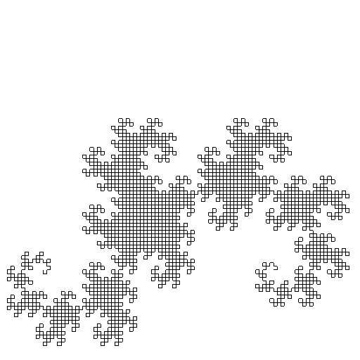
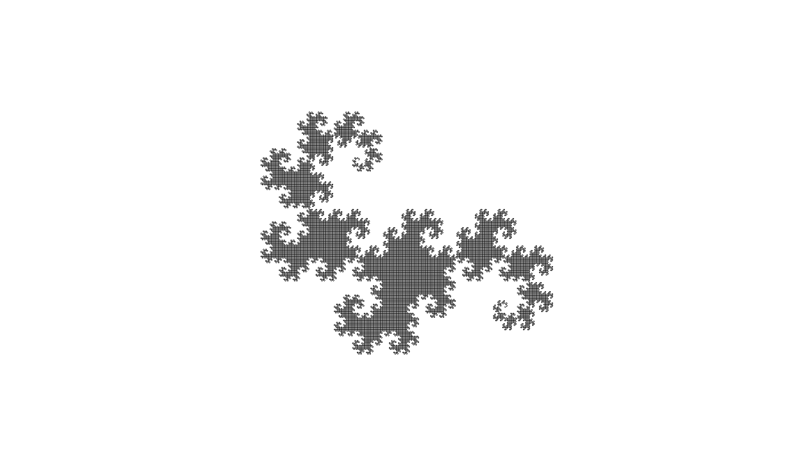

CS475
Computer Graphics
Assignment I
Developed by
Ranveer Aggarwal | 120050020
Abhinav Gupta | 120050029
Introduction
This is our submission for the first assignment of Computer Graphics. The problem statement can be found here.
Basically, the task is to implement toylogo in C++ using the openGL library.
Implementation
Given
A rudimentary parser with methods defined, but not implemented was given. The task was to implement them.
Our Solution
Using various openGL functions, we implemented the predefined methods. Maximum amount of change was made in the turtle.cpp file.
Here is how we implemented everything:
- RESET: We set the position variables and the direction variables to zero, placing the turtle right at the center of the screen.
-
CLS: For this we used
glclearto clear the color and depth buffer bits. -
F, MF, B, MB, L and R: These involved simple manipulation of the
posanddirvariables. -
COL: Again, simply setting the
colvariable did the trick. -
BGCOL: This involved passing the given arguments to
glclearcolorfunction. -
SCALE: Transformation matrices were used for this with the built-in openGL
glscalefunction. -
REPEAT: For implementing this, we replicated the loop that was running all the parser commands, i.e., iteratively pushing the commands into a list of commands and then executing them using the
exec()method.
Snapshots
Running the given examples produce the following results:
-
Example I
BEGIN CLS RESET BGCOL 1 1 1 COL 0 0 0 REPEAT 4 F 0.2 R 90 ENDREP END

-
Example II
BEGIN CLS RESET BGCOL 1 1 1 COL 0 0 0 REPEAT 36 REPEAT 4 F 0.4 R 90 ENDREP R 10 ENDREP END

-
Example III
BEGIN CLS RESET BGCOL 1 1 1 COL 0 0 0 REPEAT 36 REPEAT 36 F 0.05 R 10 ENDREP R 10 ENDREP END

Complex Simulation
The code of our complex simulation is:
BEGIN CLS SCALE 2 RESET COL 1.0 0.6 0.2 REPEAT 36 REPEAT 4 F 0.5 R 90 F 0.5 L 90 F 0.5 R 90 ENDREP R 10 ENDREP COL 1.0 1.0 1.0 REPEAT 36 REPEAT 4 F 0.4 L 90 F 0.4 R 90 F 0.4 L 90 ENDREP R 10 ENDREP COL 0.074 0.533 0.0313 REPEAT 36 REPEAT 4 F 0.3 R 90 F 0.3 L 90 F 0.3 R 90 ENDREP R 10 ENDREP COL 0 0 0.502 REPEAT 36 REPEAT 4 F 0.2 L 90 F 0.2 R 90 F 0.2 L 90 ENDREP R 10 ENDREP ENDand the output is:

Pause Function
Firstly, in the file turtle_defs.hpp, we added PAUSE in the turtle_com_name_t enum and also added another struct for implementing pause, inheriting from turtle_com_t struct. The new struct looks like:
struct turtle_pau_t : public turtle_com_t
{
double time;
turtle_pau_t() {cname=PAUSE; time=0.0;}
turtle_pau_t& operator=(turtle_pau_t& _com)
{cname=_com.cname; time=_com.time; return *this;}
}
Next, to make use of the dual buffers, we wanted to get these buffers to the turtle.cpp file where the commands were defined. For doing this, we passed the window to the turtle.cpp through the exec function. For doing this, the signature of the exec function were to be changed. This was then done in turtle.hpp and turtle.cpp files. Then, we created the pause method in the turtle_t class and wrote the following code for it in the cpp file:
void turtle_t::pause(const double _t, GLFWwindow* window)
{
glfwSwapBuffers(window);
usleep(_t*1000);
}
So, in principle, what we did was, that each time a PAUSE is called, the buffer gets swapped and there is a delay of t*1000 μs or t ms for the next command to be rendered. This in turn gives the illusion of animation.
Recursive Drawing
Implementation
For our complex recursive drawing, we made the dragon curve. The algorithm governing this drawing is simple:
DRAGON(n)
{
DRAGON(n-1)
MOVE LEFT
NODRAG(n-1)
}
NODRAG(n)
{
NODRAG(n-1)
MOVE RIGHT
DRAGON(n-1)
}
And then we call DRAGON(value) or NODRAG(value) depending on the orientation we need. This was easily implmented with the previously defined turtle functions.
Snapshots
-
For 12 iterations, we get:
 -
For 15 iterations (and smaller forward movements), we get:
